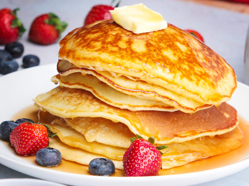
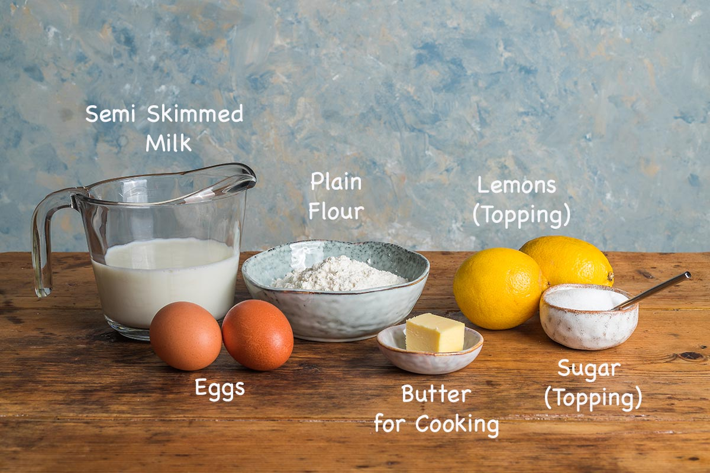
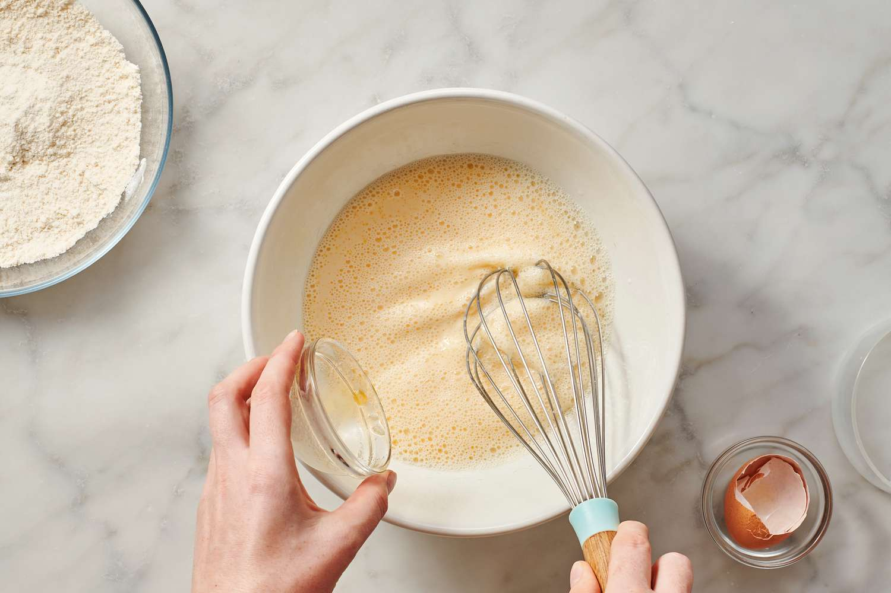
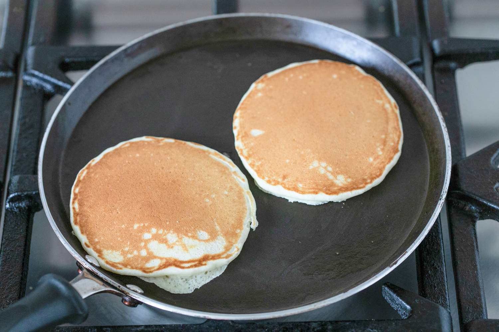
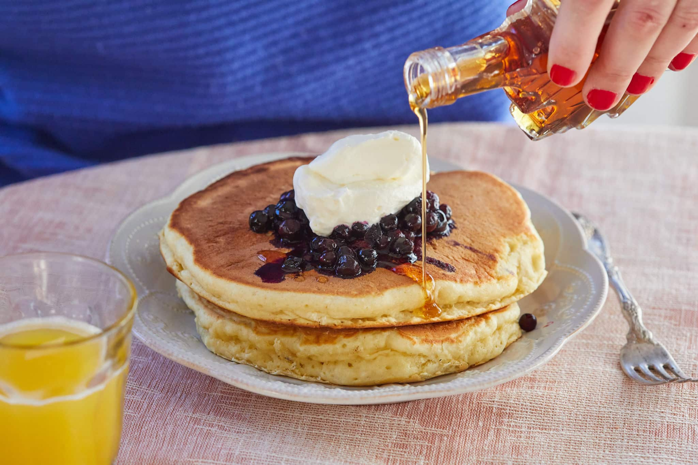

Welcome to the Interactive Cooking Guide
Learn how to make fluffy pancakes step by step.
Step 1: Gather Ingredients
Before starting, make sure you have all the necessary ingredients ready. Proper measurement ensures the best results!
Ingredients You'll Need:
- 1 cup (120g) all-purpose flour – The base of the pancakes, providing structure.
- 1 cup (240ml) milk – Adds moisture and makes the batter smooth.
- 1 large egg – Helps bind the ingredients together and adds fluffiness.
- 2 tablespoons (25g) sugar – Adds slight sweetness and enhances browning.
- 1 tablespoon (15g) baking powder – The key to fluffy pancakes! It helps the batter rise.
- 1/4 teaspoon salt – Balances the flavors.
- 2 tablespoons (30g) melted butter (or vegetable oil) – Adds richness and prevents dryness.
- 1 teaspoon vanilla extract (optional) – Adds a delicious aroma and extra flavor.
Additional Tips:
For extra soft and fluffy pancakes, sift the flour before using it. If you want dairy-free pancakes, substitute milk with almond milk or oat milk.
Step 2: Mix Ingredients
Now that you have gathered all your ingredients, it's time to mix them properly for a smooth batter.
Mixing Instructions:
- Step 1: In a large mixing bowl, sift together flour, sugar, baking powder, and salt. This removes lumps and ensures even distribution.
- Step 2: In a separate bowl, whisk together milk, eggs, melted butter, and vanilla extract until well combined.
- Step 3: Gradually pour the wet ingredients into the dry ingredients while whisking gently.
- Step 4: Mix just until combined. The batter should be slightly lumpy—overmixing will make the pancakes dense!
Mixing Tips:
Use a **whisk** instead of an electric mixer to avoid overmixing. If the batter looks too thick, add a little more milk (1 tablespoon at a time). For extra fluffiness, let the batter rest for **5-10 minutes** before cooking.
Step 3: Cook the Pancakes
Now it's time to cook your pancakes to perfection! Follow these steps:
Cooking Instructions:
- Step 1: Preheat a **non-stick pan** or griddle over **medium-low heat**.
- Step 2: Lightly grease the pan with **butter or cooking spray** to prevent sticking.
- Step 3: Pour **¼ cup of batter** onto the pan for each pancake, spacing them apart.
- Step 4: Cook for about **2-3 minutes**, until bubbles form on the surface and the edges look set.
- Step 5: Flip the pancake gently using a spatula, then cook for another **1-2 minutes** until golden brown.
- Step 6: Remove from the pan and keep warm by placing them on a plate covered with a clean kitchen towel.
Cooking Tips:
- To test if your pan is ready, sprinkle a few drops of water—if they sizzle and evaporate, it's good to go!
- Do not press down on the pancakes while cooking; this will make them dense instead of fluffy.
- If making multiple pancakes, keep them warm in a **200°F (93°C) oven** while finishing the batch.
Step 4: Serve and Enjoy!
You're almost done! Now, it’s time to serve and enjoy your delicious pancakes.
Serving Suggestions:
- Classic: Drizzle with **maple syrup** and add a pat of butter.
- Fresh & Fruity: Top with **fresh berries** like strawberries, blueberries, or bananas.
- Sweet Treat: Add **chocolate chips**, whipped cream, or a dusting of powdered sugar.
- Nutty & Crunchy: Sprinkle **chopped nuts** (almonds, walnuts) for extra texture.
- Healthy Option: Serve with **Greek yogurt and honey** for a protein-packed twist.
Final Tips:
For the best experience, serve pancakes immediately while they’re warm and fluffy! You can also store leftovers in an **airtight container** in the fridge for up to 3 days. Reheat in a toaster or microwave for a quick and tasty breakfast!